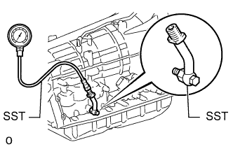

СИСТЕМА АВТОМАТИЧЕСКОЙ ТРАНСМИССИИ (для моделей с двигателем 1GR-FE) > ПРОВЕРКА МАГИСТРАЛЬНОГО ДАВЛЕНИЯ |
| ВЫПОЛНИТЕ ПРОВЕРКУ МАГИСТРАЛЬНОГО ДАВЛЕНИЯ |
Измерьте магистральное давление.
Прогрейте жидкость для автоматической трансмиссии (ATF).
Выключите зажигание.
Приподнимите автомобиль.
|  |
Снимите испытательную заглушку с картера трансмиссии и подсоедините SST.
Опустите автомобиль.
Полностью включите стояночный тормоз и установите колодки под все 4 колеса.
Запустите двигатель и проверьте частоту вращения холостого хода.
Нажав и твердо удерживая левой ногой педаль тормоза, переведите рычаг переключения передач в положение D.
Измерьте магистральное давление на холостом ходу двигателя.
Правой ногой до упора нажмите педаль акселератора. Как только частота вращения коленчатого вала двигателя достигнет частоты оборотов при столл-тесте, считайте максимальное значение магистрального давления.
Аналогичным образом выполните испытание в положении R рычага переключения передач.
| Условие | Положение D | Положение R |
| Столл-тест | 1200-1450 кПа (12,2-14,8 кгс/см2, 174-210 фунтов на кв. дюйм) | 1150 - 1400 кПа (11,7 - 14,3 кгс/см2, 167 - 203 фунтов на кв.дюйм) |
| Неисправность | Возможная причина |
| Измеренные значения выше заданного давления во всех положениях |
|
| Измеренные значения ниже заданного давления во всех положениях |
|
| Давление мало только в положении D |
|
| Давление мало только в положении R |
|